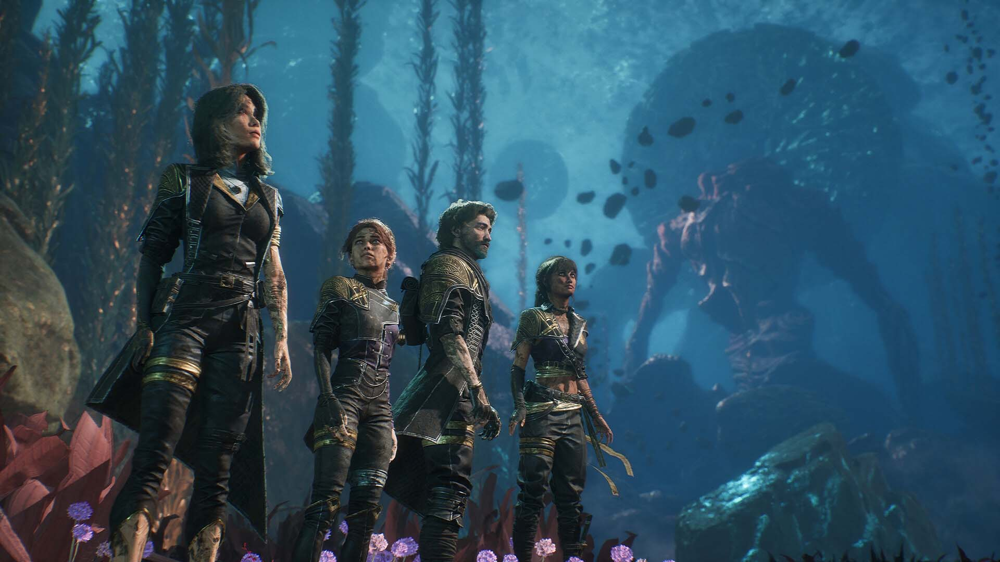
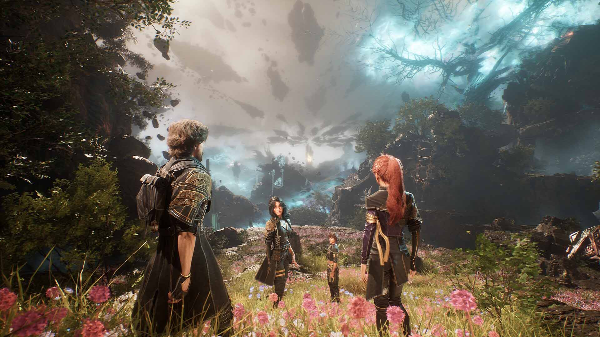
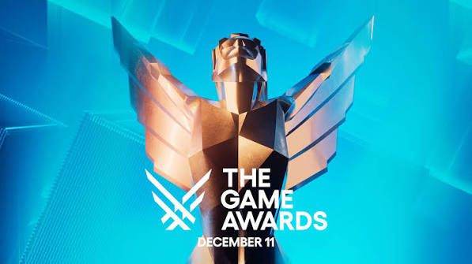

Expedition 33؛ شگفتی بزرگ امسال با 9 جایزه مهم
Expedition 33 یکی از آن آثاری است که بدون هیاهوی فراوان وارد میدان شد، اما خیلی زود توانست توجه بخش بزرگی از جامعه بازیدوستان و منتقدان را به خود جلب کند. در دنیایی که هر روز بازیهای عظیم، دنبالههای پرهزینه و پروژههای تبلیغاتی بزرگ منتشر میشوند، دیده شدن یک عنوان تازه کار سادهای نیست.
با این حال Expedition 33 توانست مسیر متفاوتی را طی کند؛ مسیری که بر پایه هویت مستقل، طراحی هنری خاص و رویکردی حسابشده در روایت شکل گرفته بود. همین ترکیب باعث شد بازی نه فقط بهعنوان یک محصول سرگرمکننده، بلکه بهعنوان یک پدیده قابلبحث در صنعت بازی مطرح شود.
یکی از نکات مهم درباره این بازی، توانایی آن در ایجاد تعادل میان چند عنصر کلیدی است. بازی هم از نظر بصری چشمگیر است، هم از نظر ساختار روایی حرفی برای گفتن دارد، و هم در اجرای فنی تلاش میکند تجربهای قابلاعتماد ارائه دهد. چنین تعادلی همیشه بهسادگی به دست نمیآید.
بسیاری از آثار مشابه، یا در طراحی هنری میدرخشند و در گیمپلی کم میآورند، یا در ایدههای داستانی قویاند اما در اجرا دچار ضعف میشوند. Expedition 33 در نگاه اول نشان میدهد که هدفش فقط ارائه یک نمای ظاهری جذاب نیست، بلکه میخواهد تجربهای منسجم و کامل بسازد.
همین مسئله است که باعث شده نام بازی در مدت کوتاهی فراتر از یک عنوان تازه مطرح شود. وقتی یک محصول بتواند هم مخاطب عمومی را جذب کند و هم نظر منتقدان را برانگیزد، یعنی در چند سطح مختلف موفق عمل کرده است.

در تحلیل موفقیت Expedition 33 باید به یک نکته بنیادی توجه کرد: موفقیت در صنعت بازی فقط وابسته به بودجه یا مقیاس پروژه نیست. گاهی یک ایده روشن، یک هویت هنری منسجم و یک اجرای دقیق میتواند از بسیاری از تولیدات پرهزینه مؤثرتر باشد.
این بازی دقیقاً از همین زاویه قابل توجه است. بهجای آنکه صرفاً به جلوههای سطحی تکیه کند، تلاش میکند تجربهای خلق کند که در ذهن بماند. این ماندگاری معمولاً از ترکیب سه عامل به دست میآید: طراحی، روایت و پرداخت.
طراحی هنری بازی از نخستین عناصری است که توجه مخاطب را جلب میکند. چنین طراحیای فقط برای زیبایی نیست؛ بلکه نقش مهمی در ساختن هویت مستقل بازی دارد. وقتی یک اثر از همان نگاه اول قابل تشخیص باشد، یعنی توانسته امضای بصری خود را پیدا کند.
در بسیاری از بازیها، ظاهر اثر شبیه به دهها عنوان دیگر است. اما در Expedition 33 این حس تکرار کمتر دیده میشود. همین تفاوت ظاهری، به اثر کمک میکند تا در ذهن مخاطب ثبت شود و از حالت «یکی دیگر از بازیهای جدید» خارج شود.
بخش دیگری از جذابیت بازی به فضای روایی آن برمیگردد. روایت، وقتی مؤثر است که فقط یک سلسله رویداد نباشد، بلکه بتواند حس، ریتم و جهتگیری مشخصی به تجربه بدهد. بازی در این زمینه تلاش میکند تصویری متفاوت و منسجم بسازد.
وجود چنین ساختاری باعث میشود بازیکن صرفاً دنبالکننده اتفاقات نباشد، بلکه خود را درگیر جهان و منطق درونی آن احساس کند. این درگیری ذهنی یکی از مهمترین دلایل ماندگاری یک بازی است.
از نظر فنی نیز اثر تلاش دارد سطحی قابل قبول ارائه دهد. اجرای فنی خوب همیشه به معنای پیچیدگی افراطی نیست؛ گاهی یعنی بازی بتواند تجربهای روان، تمیز و بدون آشفتگی ارائه کند. همین نکته در ارزیابیهای مثبت اهمیت زیادی دارد.
در بازار امروز، مخاطب نسبت به ایرادهای فنی حساستر از گذشته است. به همین دلیل، هر اثری که بتواند از این آزمون عبور کند، یک قدم مهم به سمت اعتبار بیشتر برمیدارد.
Expedition 33 از این منظر نمونهای جالب است، چون توجه منتقدان را نه با یک جنبه، بلکه با مجموعهای از ویژگیها جلب کرده است. این نوع موفقیت معمولاً پایدارتر از موفقیتهای مقطعی و صرفاً تبلیغاتی است.
یکی از پرسشهای مهم درباره چنین آثاری این است که آیا موفقیت آنها صرفاً به دیدهشدن رسانهای مربوط است یا نه. پاسخ در مورد Expedition 33 بهنظر میرسد منفی باشد؛ زیرا نشانههای موفقیت آن در خود متن اثر نیز دیده میشود.
وقتی یک بازی بتواند در چند سطح همزمان اثرگذار باشد، احتمال دریافت بازخورد مثبت و حتی جوایز معتبر افزایش پیدا میکند. دریافت 9 جایزه برای Expedition 33 دقیقاً از همین منطق قابل درک است.
البته خودِ عدد 9 بهتنهایی تمام ماجرا را توضیح نمیدهد. اهمیت اصلی در این است که اثر توانسته در رقابت با عنوانهای دیگر جایگاه ویژهای برای خود بسازد. این یعنی بازی فقط «قابل قبول» نبوده، بلکه «قابل توجه» هم بوده است.
در چنین شرایطی، نام بازی از سطح یک محصول سرگرمی فراتر میرود و به بخشی از گفتوگوی عمومی صنعت تبدیل میشود. این اتفاق برای هر پروژهای ارزشمند است، اما برای یک استودیوی کوچک یا تیمی با منابع محدود اهمیت بیشتری پیدا میکند.
زیرا در آن حالت، موفقیت فقط یک پیروزی تجاری نیست، بلکه نشانهای از بلوغ خلاقانه و توانایی اجرایی است. یعنی تیم سازنده ثابت میکند که میتواند با اتکا به ایده و دقت، در برابر بازیهای عظیمتر هم حرفی جدی بزند.
اینجا دقیقاً همان نقطهای است که Expedition 33 را جذاب میکند. بازی بهجای رقابت مستقیم با بزرگان صنعت در مقیاس بودجه، بر کیفیت تجربه و هویت هنری تکیه کرده است. همین انتخاب، آن را از بسیاری از پروژههای مشابه جدا میکند.

موفقیت این بازی همچنین یک پیام مهم برای صنعت دارد: مخاطب هنوز برای آثار خلاقانه، متفاوت و خوشساخت ارزش قائل است. حتی در بازاری که حجم تبلیغات و رقابت بسیار بالاست، کیفیت واقعی همچنان میتواند مسیر دیدهشدن را باز کند.
این مسئله برای سازندگان مستقل اهمیت ویژهای دارد. وقتی نمونهای مانند Expedition 33 موفق میشود، به دیگر تیمها نشان میدهد که لزوماً نیازی به بزرگترین بودجهها برای ساخت یک اثر ماندگار وجود ندارد.
البته این به معنای ساده بودن راه نیست. برعکس، چنین موفقیتی معمولاً نتیجه ترکیب ایدهپردازی دقیق، برنامهریزی درست، انسجام تیمی و اجرای بینقص است. هر کدام از این عناصر اگر ضعیف باشند، خروجی نهایی آسیب میبیند.
از نظر تحلیلی، Expedition 33 را میتوان نمونهای از «موفقیت مبتنی بر شخصیت اثر» دانست. یعنی بازی بهجای تکیه بر یک ویژگی منفرد، مجموعهای از عناصر مکمل را کنار هم قرار داده است.
همین همافزایی میان عناصر مختلف است که تجربه نهایی را قدرتمند میکند. بازیکن تنها یک تصویر زیبا نمیبیند، بلکه با یک دنیای نسبتاً منسجم، یک لحن مشخص و یک ریتم حسابشده مواجه میشود.
در چنین آثاری، هر جزء باید در خدمت کلیت باشد. موسیقی، تصویر، روایت، طراحی محیط و حتی نحوه ارائه اطلاعات اگر همسو نباشند، نتیجه پراکنده خواهد شد. Expedition 33 در نگاه کلی نشان میدهد که از این خطر عبور کرده است.
نکته مهم دیگر این است که بازی توانسته توجه را نهفقط در لحظه، بلکه در سطح ارزیابی و بازخورد پایدار جلب کند. این تفاوت بسیار مهم است؛ زیرا بسیاری از آثار در زمان انتشار دیده میشوند اما خیلی زود فراموش میشوند.
اما اثری که در حافظه جمعی باقی بماند، معمولاً ویژگیهایی دارد که فراتر از موج اولیه عمل میکنند. Expedition 33 دقیقاً از همین جنس به نظر میرسد: بازیای که میخواهد بهعنوان یک نام قابلارجاع در ذهن بماند.
از منظر نقد و بررسی، این بازی را میتوان نمونهای دانست از اینکه چگونه طراحی درست میتواند به موفقیت واقعی منجر شود. اگرچه جزئیات فنی و محتوایی کامل در دست نیست، اما شواهد موجود نشان میدهد که ترکیب کلی اثر، قدرتمند بوده است.
در نهایت، مهمترین چیزی که از Expedition 33 بهجا میماند، صرفاً 9 جایزه نیست؛ بلکه این پیام است که یک ایده خوب، اگر درست اجرا شود، میتواند در صنعت بازی به موفقیتی بزرگ تبدیل شود.
این بازی نشان میدهد که در دنیای رقابتی امروز، هنوز هم آثار تازه میتوانند بدرخشند، به شرط آنکه جسارت، انسجام و هویت داشته باشند.
Expedition 33 برای بسیاری از مخاطبان فقط یک بازی نیست؛ بلکه نشانهای است از امکان موفقیت متفاوت. موفقیتی که نه بر سر و صدا، بلکه بر کیفیت تکیه دارد.
و شاید همین ویژگی باشد که آن را به یکی از بحثبرانگیزترین و قابلتوجهترین آثار امسال تبدیل کرده است.
جوایز مهم Expedition 33 در The Game Awards 2025

یکی از مهمترین دلایل مطرح شدن بازی Clair Obscur: Expedition 33 موفقیت چشمگیر آن در مراسم The Game Awards 2025 بود. این بازی توانست در مجموع 9 جایزه مهم را از آن خود کند و به یکی از پرافتخارترین آثار این مراسم تبدیل شود.
دریافت این تعداد جایزه نشان میدهد که Expedition 33 فقط در یک بخش خاص موفق نبوده است؛ بلکه توانسته در زمینههای مختلفی مانند داستانگویی، طراحی هنری، موسیقی، کارگردانی، اجرا و گیمپلی نقشآفرینی عملکرد بسیار قدرتمندی داشته باشد.
-
بازی سال — Game of the Year
مهمترین جایزه مراسم که به بهترین تجربه کلی سال تعلق میگیرد. دریافت این عنوان نشان میدهد که Expedition 33 از نظر کیفیت، تأثیرگذاری و کامل بودن تجربه، توانسته از میان رقبای قدرتمند خود بالاتر قرار بگیرد.
-
بهترین کارگردانی بازی — Best Game Direction
این جایزه به شیوه کارگردانی، طراحی تجربه بازیکن و هماهنگی میان بخشهای مختلف بازی اختصاص دارد. Expedition 33 توانسته میان داستان، گیمپلی، طراحی محیط و فضای کلی بازی هماهنگی قابلتوجهی ایجاد کند.
-
بهترین روایت — Best Narrative
Expedition 33 در بخش داستانپردازی نیز موفق ظاهر شد و جایزه بهترین روایت را دریافت کرد. فضای روایی متفاوت، داستان منسجم و عمق مفهومی بازی از جمله عواملی هستند که باعث شدند روایت آن مورد توجه قرار بگیرد.
-
بهترین کارگردانی هنری — Best Art Direction
طراحی بصری خاص و هویت تصویری مستقل، نقش مهمی در موفقیت Expedition 33 داشتند. بازی با استفاده از فضاسازی متفاوت، محیطهای چشمگیر و سبک هنری منحصربهفرد، توانست جایزه بهترین کارگردانی هنری را به دست آورد.
-
بهترین موسیقی و آهنگسازی — Best Score and Music
جایزه بهترین موسیقی و آهنگسازی به Lorien Testard، آهنگساز بازی، تعلق گرفت. موسیقی Expedition 33 در ایجاد فضای احساسی، تقویت لحظات داستانی و شکل دادن به حالوهوای جهان بازی نقش مهمی ایفا میکند.
-
بهترین اجرا — Best Performance
Jennifer English برای اجرای نقش Maelle موفق به دریافت جایزه بهترین اجرا شد. اجرای او باعث شد شخصیت Maelle ارتباط بیشتری با مخاطب برقرار کند و بخشهای داستانی بازی تأثیرگذاری بیشتری داشته باشند.
-
بهترین بازی مستقل — Best Independent Game
Expedition 33 در بخش بهترین بازی مستقل نیز پیروز شد. این جایزه اهمیت زیادی دارد، زیرا بازی توانسته در رقابت با آثار مستقل دیگر، کیفیت فنی، طراحی هنری و هویت ویژه خود را به نمایش بگذارد.
-
بهترین بازی مستقل اول — Best Debut Indie Game
این بازی همچنین جایزه بهترین بازی مستقل اول را دریافت کرد. کسب این عنوان نشان میدهد که تیم سازنده در نخستین تجربه خود توانسته اثری خلاقانه، منسجم و تأثیرگذار تولید کند.
-
بهترین بازی نقشآفرینی — Best RPG
Expedition 33 در بخش بهترین بازی نقشآفرینی نیز برنده شد. عناصر داستانی، فضای ماجراجویانه، عمق جهان بازی و ساختار نقشآفرینی، از مهمترین عواملی بودند که باعث موفقیت آن در این بخش شدند.
اهمیت دریافت 9 جایزه برای Expedition 33
دریافت 9 جایزه در یک مراسم معتبر، تنها یک موفقیت آماری نیست؛ بلکه نشاندهنده کیفیت و هماهنگی بخشهای مختلف بازی است. Expedition 33 توانست هم در زمینه داستان، هم در طراحی هنری، هم در موسیقی و اجرا و هم در ساختار کلی بازی بدرخشد.
این موفقیت از آن جهت اهمیت دارد که Expedition 33 در بازاری رقابتی با آثار بزرگ و پرهزینه قرار گرفته است. بااینحال، بازی توانست بهجای تکیه صرف بر تبلیغات گسترده، از طریق ایدهای روشن، هویتی مستقل و اجرای دقیق توجه مخاطبان و منتقدان را به خود جلب کند.
مجموع این جوایز نشان میدهد که موفقیت Expedition 33 به یک ویژگی خاص محدود نمیشود. داستان منسجم، طراحی هنری متفاوت، موسیقی تأثیرگذار، اجرای قدرتمند، کارگردانی دقیق و ساختار نقشآفرینی مناسب، همگی در شکلگیری این موفقیت نقش داشتهاند.
به همین دلیل، Expedition 33 را میتوان یکی از مهمترین شگفتیهای صنعت بازی دانست؛ اثری که بدون هیاهوی فراوان وارد میدان شد، اما با کیفیت خود توانست به یکی از پرافتخارترین بازیهای سال تبدیل شود.
در جمعبندی نهایی میتوان گفت Expedition 33 یک نمونه روشن از قدرت خلاقیت، هویت مستقل و اجرای سنجیده است. بازیای که توانست در سکوت نسبی، صدایی بلند در صنعت ایجاد کند.
اگر بخواهیم این موفقیت را در یک جمله خلاصه کنیم، باید گفت: Expedition 33 ثابت کرد که کیفیت، هنوز هم مهمترین عامل ماندگاری است.